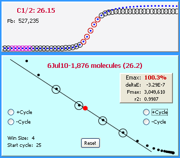

For unknown reasons, some amplicons produce anomalies within the upper regions of an amplification profile. These are referred to as "plateau drift" and "profile collapse":
An example of moderate plateau drift

An example of profile collapse
As discussed in the automated LRE window selection section, it is important not to include these anomalous cycles into the LRE window. Depending on the severity it is recommended that such amplicons be replaced.
As discussed in the Emax normalization section, kinetic anomalies have also been found to generate systematic biases which generate Emax values >100%.